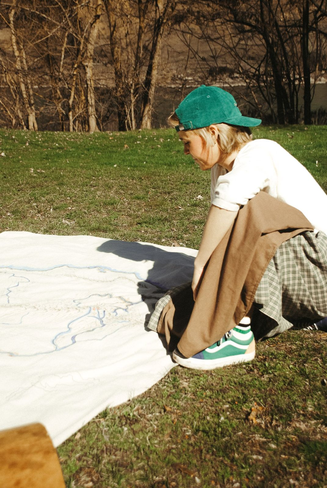
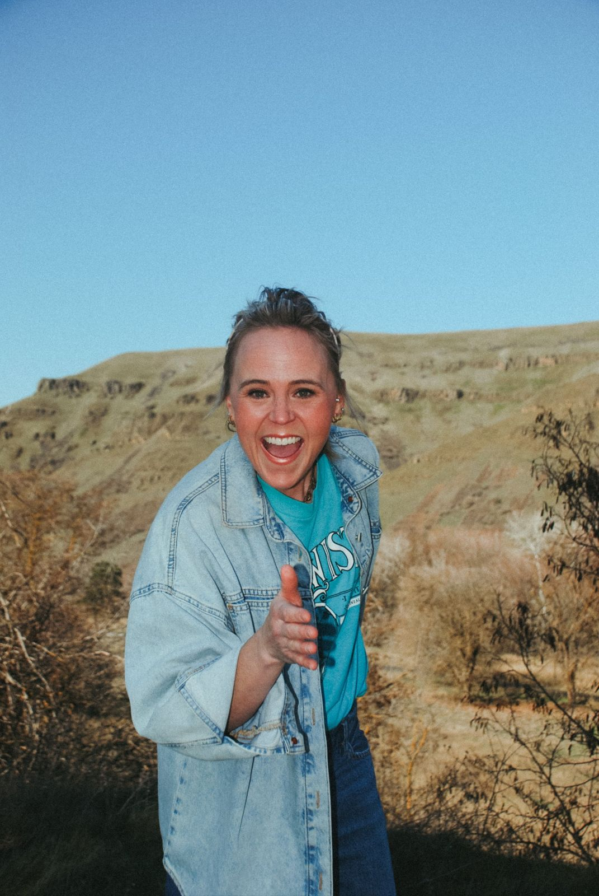
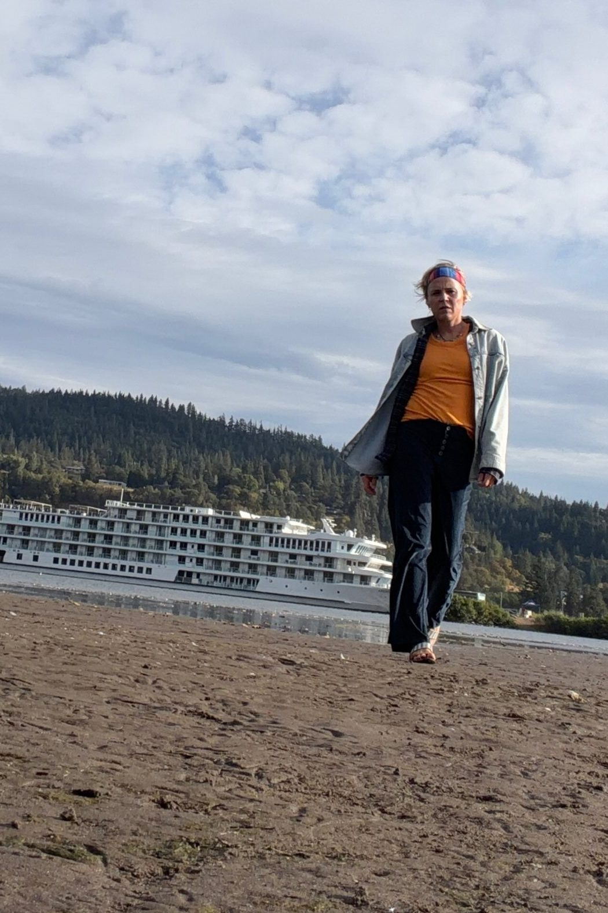
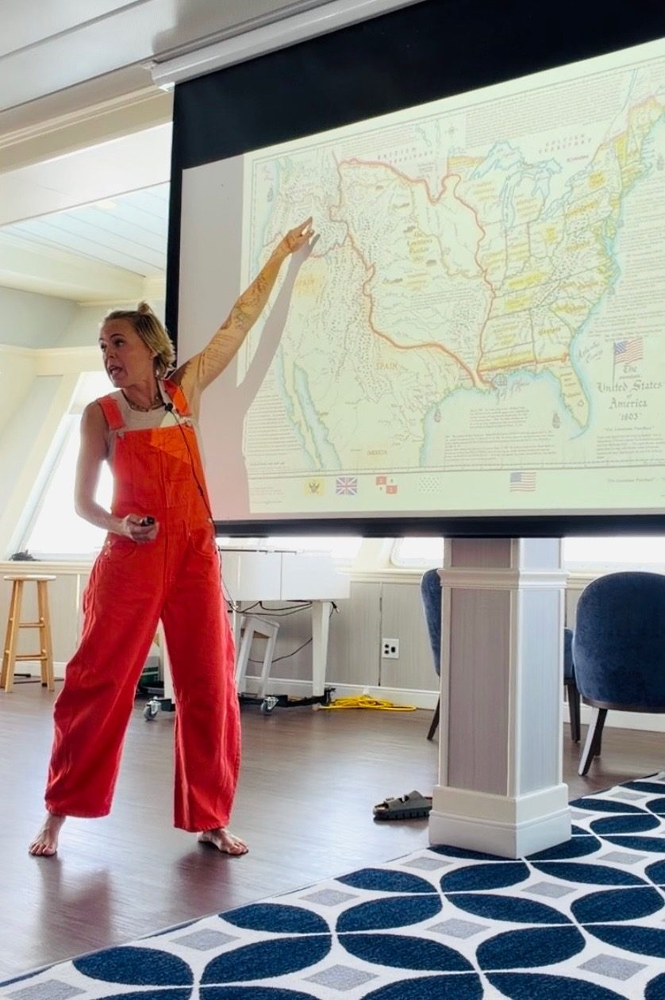
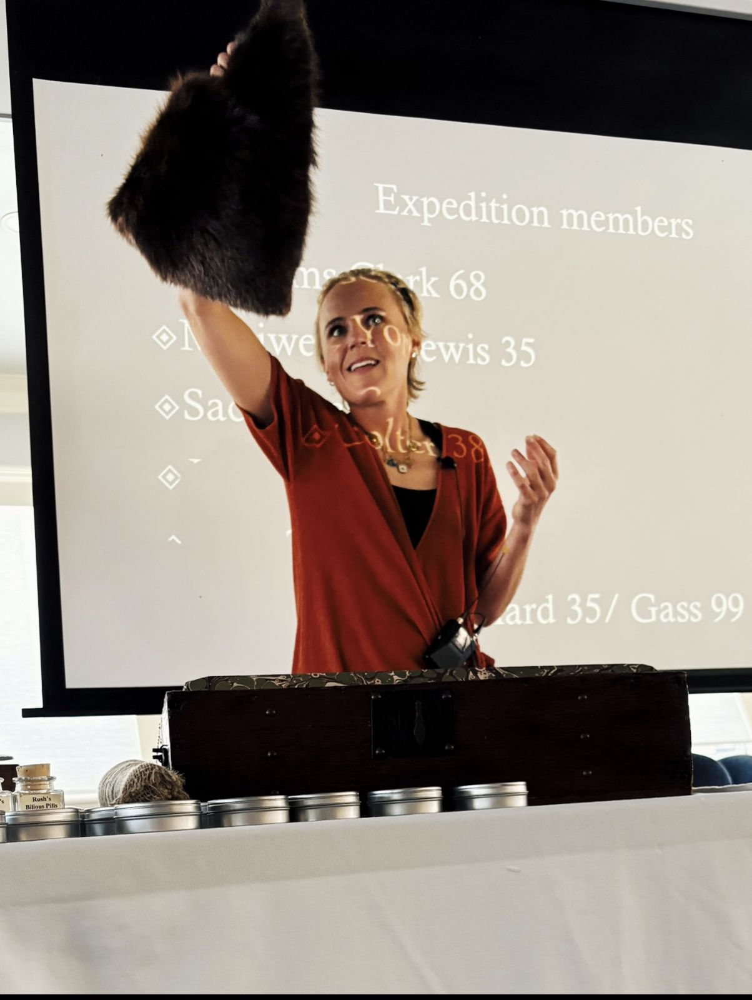
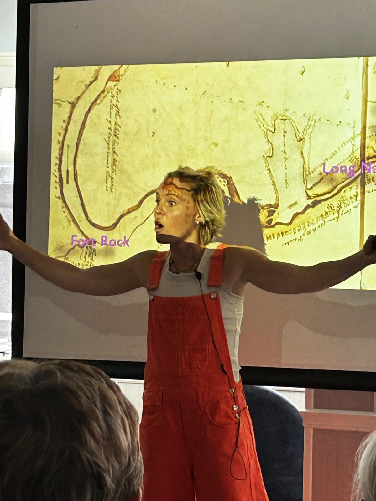
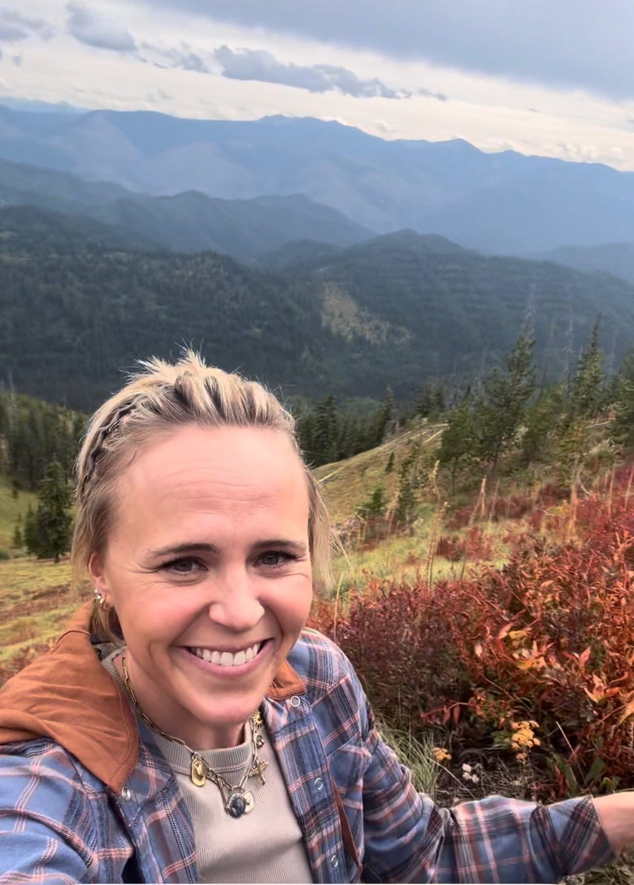

On the trail
Trail and river trips with outfitters like Lewis and Clark Trail Adventures, from the Lolo Trail in the Bitterroots to the White Cliffs of the Missouri. This is where she's happiest.
Plan a trail programHistorian and educator Laurie Hayes teaches the history of the Pacific Northwest on the trail, on the river, and in the classroom, for learners from 9 to 99.

History lands differently when you're standing where it happened. For nearly a decade, Laurie has taught wherever the story is.

Trail and river trips with outfitters like Lewis and Clark Trail Adventures, from the Lolo Trail in the Bitterroots to the White Cliffs of the Missouri. This is where she's happiest.
Plan a trail program

Featured historian aboard American Cruise Lines voyages on the Columbia and Snake Rivers, now heading into her third season.
Plan a river program
Guest presentations, multi-day units, lesson plans, and teacher workshops for schools, museums, and community groups across the region.
Plan a classroom programThe whole story of the Northwest, beginning with the tribal nations whose homelands these have always been, and taught with care and respect alongside the explorers, traders, and settlers who came later.

The Nimiipuu (Nez Perce), Shoshone-Bannock, Coeur d'Alene, Salish, and other nations of the region, and their side of the story.
Voyages to the Northwest coast and the search for the Columbia. A particular specialty.
The Corps of Discovery's journey across the Northwest, including the Lolo Trail crossing.
The medicines, instruments, and treatments the expedition carried, from Rush's Bilious Pills to lancets, taught hands-on with Laurie's chest of period pieces and reproductions.
Trappers, traders, and the rendezvous, the yearly gatherings where furs, supplies, and stories changed hands across the Rockies.
How Idaho came to be, from Native homelands to mining rushes and statehood.
What it really took to cross two thousand miles by wagon, and what changed when emigrants arrived.
Laurie knows the region's history broadly and will shape a program to your audience.
Any length, from a focused 1 to 2 hour presentation to multi-day events, plus classroom lesson plans. Reach out and she'll shape it around your group.

I'm Laurie Hayes, a historian and educator from Lewiston, Idaho, right where the Clearwater meets the Snake. Past audiences and partners may know me as Laurie Rudd.
I teach the layered history of the Pacific Northwest, with a special love for the age of exploration and for Idaho, especially the Lolo Trail. The tribal nations of this region have lived here since time immemorial, and teaching their side of the story with respect is at the heart of everything I do. The name Canoes and Confluences comes from my belief that the best way to understand this history is to get out in it: paddle the rivers, walk the trails, and stand where it happened.
[Quote]
[Quote]
[Quote]
Tell her a little about your group and what you have in mind. She'll take it from there.